10.8.26
A lot happened to my homelab since my last post. I made some upgrades to my hardware, deployed some new applications, and made significant improvements to my network.
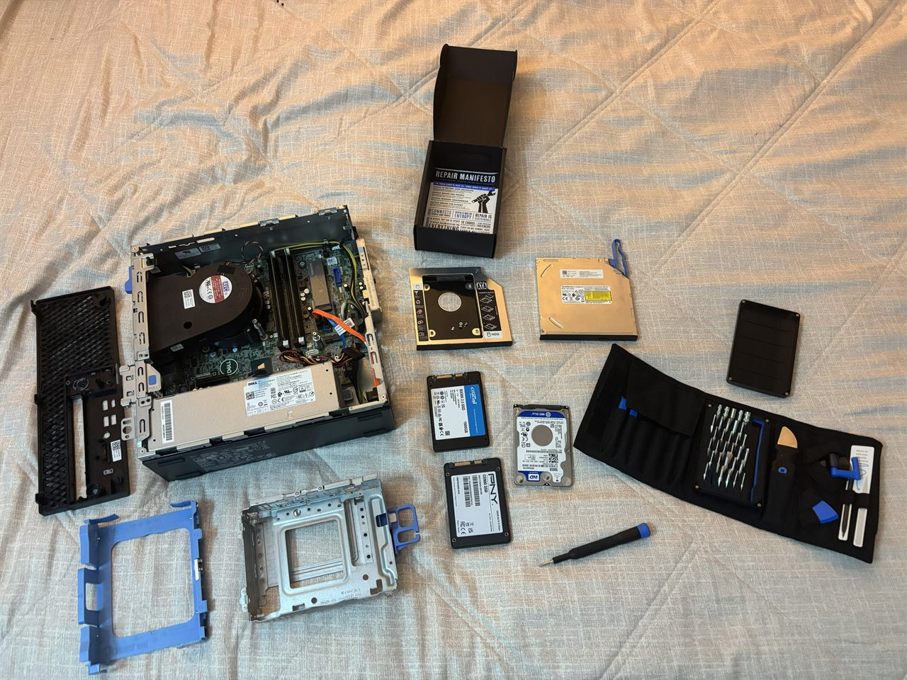
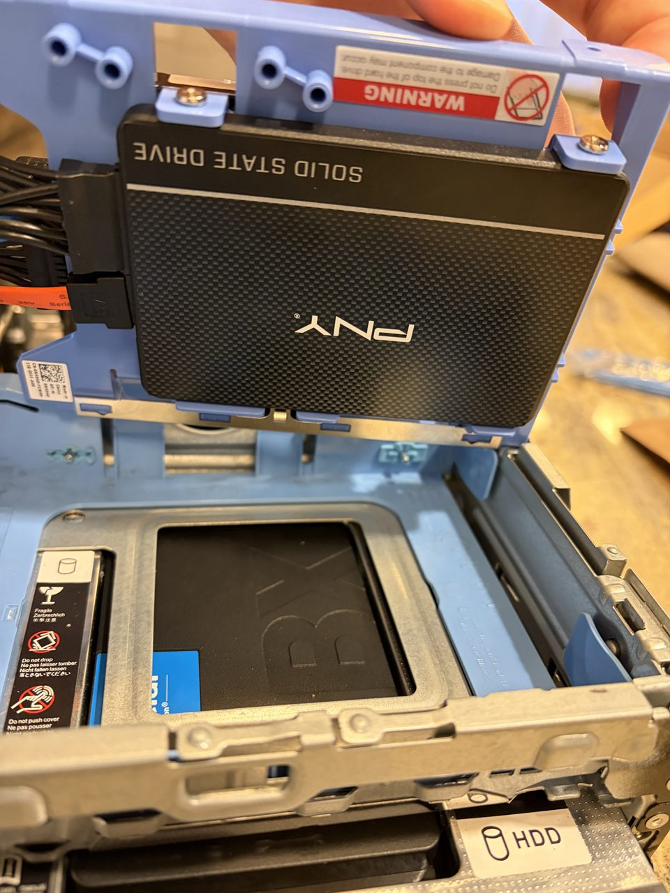
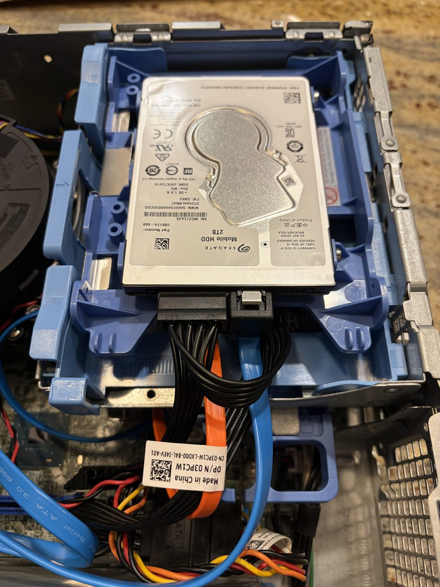
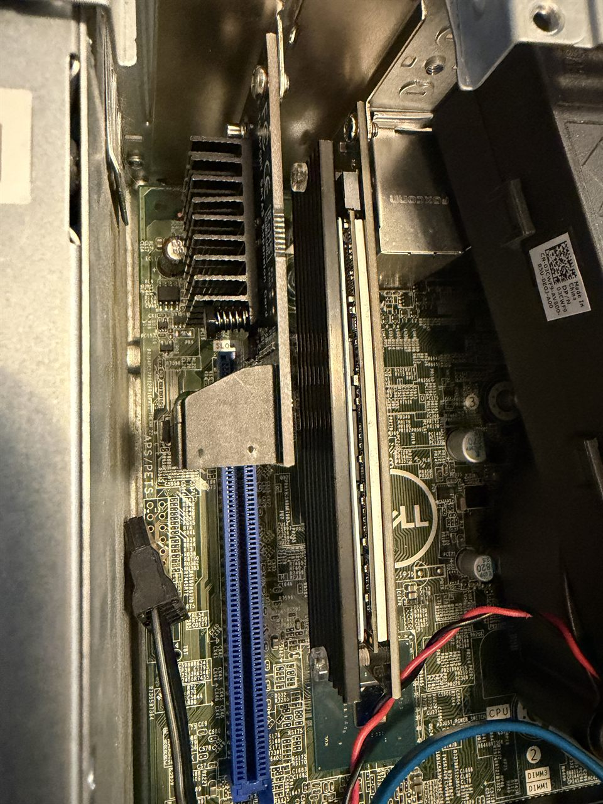
For starters, I added additional hard drives to my TrueNAS OptiPlex for more storage. This is important because it allowed me to replicate my important photos to one of the backup drives in case my main photo drive failed. The other drive I added was used to store my media for my Jellyfin server.
I have so many hard drives and SSDs because when I used to play on gaming consoles, I bought myself external storage drives. Now that I mainly play on PC, I don't use them anymore. So, I wiped the information off of the drives and took them out of their plastic cases so I could put them directly into the server. This will allow data to transfer more efficiently than through a USB connection. I checked the spin cycles on the drives to ensure that they could be used for a long time. This is important because SSDs are very expensive today...
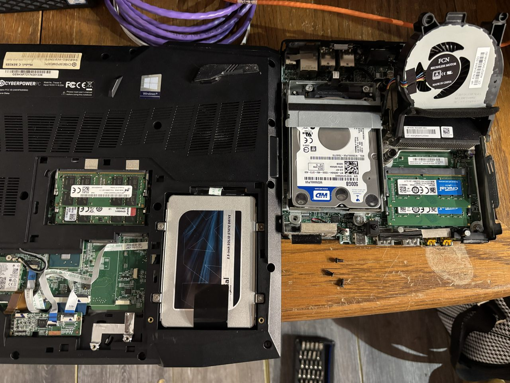
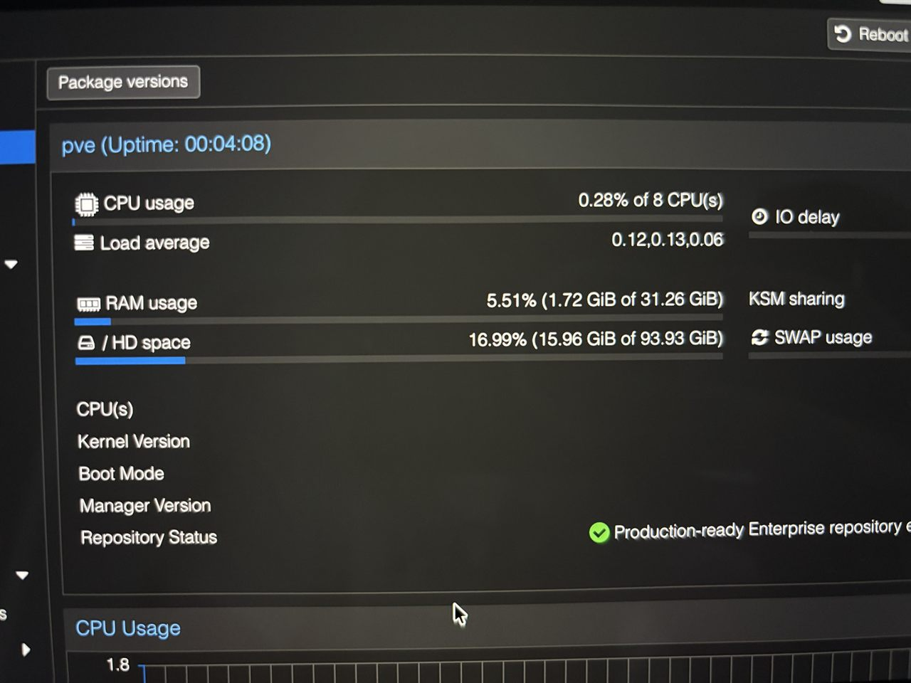
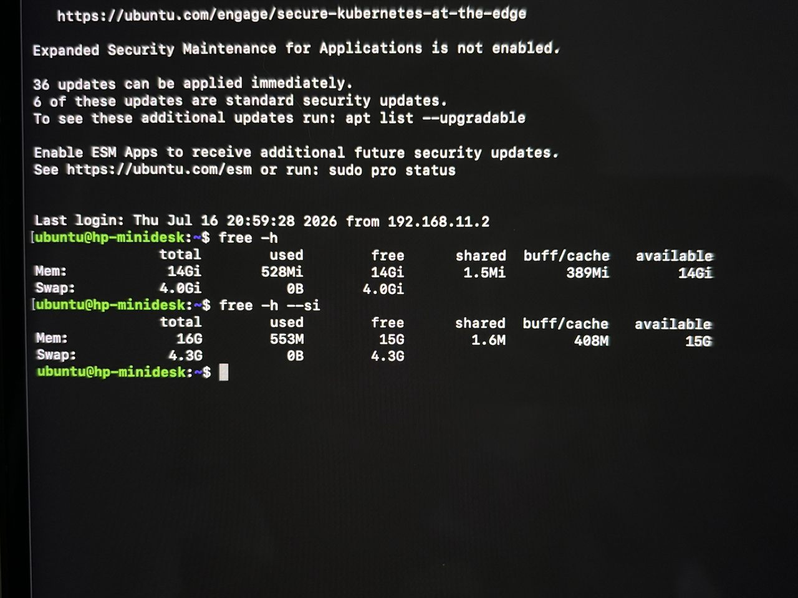
Secondly, I upgraded the RAM inside my Proxmox server and my HP Mini PC. I received the RAM from a friend and thought it would be great for my homelab!
For my Proxmox server, I now have 32GB DDR4 RAM and I have 16GB DDR4 RAM in my HP Mini PC.
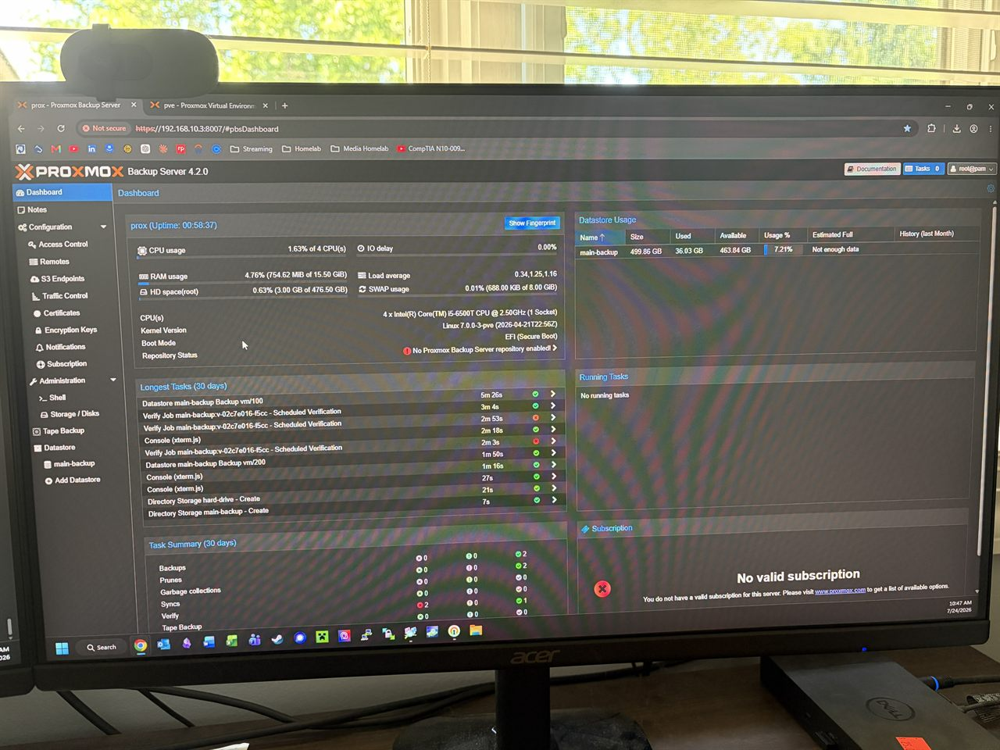
Thirdly, I set up a Proxmox Backup Server (PBS) to back up my Proxmox server. This is important because it allows me to back up my virtual machines and containers in case something goes wrong with my Proxmox server. I set up the PBS on my HP Mini PC and connected it to my Proxmox server. Now, I can back up my virtual machines and containers to the PBS and restore them if needed.
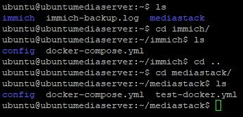
Lastly, I deployed a few new applications to my homelab. I deployed Immich, a self-hosted photo management application, Jellyfin, a self-hosted media server, and a few other applications. I learned that I could run multiple applications inside a docker-compose file. This made deploying and managing them much easier.
Immich is a great application because it allows me to manage my photos in one place. It also allows me to back up my photos from my phone and computer to my homelab. Then, I could access all my photos from anywhere and free up space on my phone!
Jellyfin is a great application because it allows me to stream my owned media from my homelab to any device in my home. It also allows me to organize my media library and create playlists.
Overall, I am very happy with the progress I've made. Just recently, I've secured a deal with a friend that would allow me to upgrade the storage of my TrueNAS server even more! I also plan on setting up Nginx Proxy Manager to manage my applications easier and to finally make HomeAssistant useful.
1.7.26
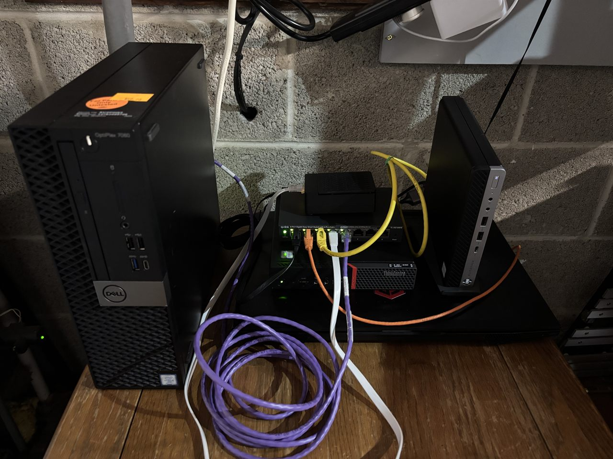
Coming home for winter break allowed me to work on my homelab more. Not only did I have more free time to tinkers and mess around with it, but I also couldn't virtually access my homelab from school. However, this would soon change.
I decided to set up a solution to the problem I had and that was not being able to access my homelab's applications from outside my network. So, I taught myself how to set up a virtual private network (VPN) tunnel. Since I already had a pfSense firewall/router combo, I set up a VPN tunnel so that I could access my homelab from anywhere around the world. Just as long as I was connected to the internet.
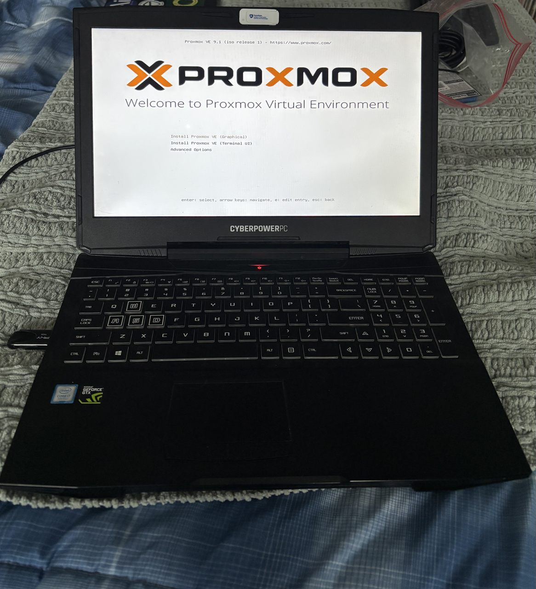
After setting up the VPN, I wanted to start a Proxmox server for myself. This is because for the holidays, I received parts for me to build myself a PC and no longer had a use for the laptop I was currently using.
I loaded the Proxmox ISO onto a USB drive and installed it on my old gaming laptop. From there, I configured the server and could access it remotely via its GUI. From there, I have a few virtual machines running on the server. I converted one of the servers into a Minecraft server so that I could have that up and running again. I have uses for the other servers but will slowly be working on them.
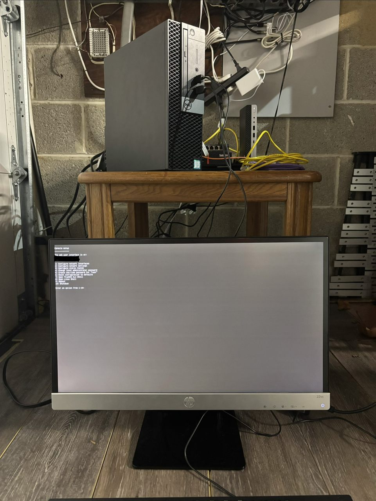
Additionally, I went to a hardware surplus store and scored myself a Dell OptiPlex for a good price. I only had to supply my own SSD and it was up and running!
I swapped out the old TrueNAS server and replaced it with the OptiPlex. Getting it set up was straightforward since I went through all the steps previously. The only difference was that I had an additional hard drive to set up for storage.
This additional hard drive allowed me to start using my applications. For example I taught myself how to set up a ZFS pool so I can add media to the drive while also connecting the drive to my Jellyfin server. This allowed me to start streaming the media I owned to my devices.
Adding this extra machine to my network required me to upgrade my network switch to accommodate the additional device. I invested in a layer 3 switch to improve network performance. This also allows me in the future to set up VLANs and isolate my network traffic for security purposes. However, I will learn that in the upcoming future.
8.16.25
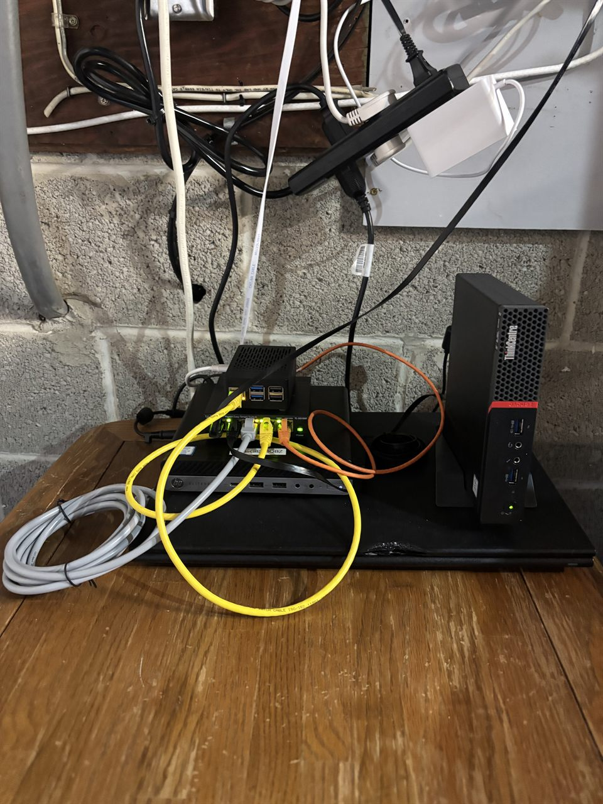
Shout out to:
If it weren't for these creators, I wouldn't have been able to build my homelab.
I took about a week doing research on what I could do to upgrade my already growing homelab. I discovered these YouTube channels and found inspiration through all of them.
I first went out and bought more ethernet cables for my network switch to add more ports for my devices. I also had a Raspberry Pi 5 laying around and learned from Louis Rossmann's FUTO guide that I could set it up to run Pi-hole, a network-wide ad blocker.
The Lenovo Mini PC continued running a Minecraft Paper server. I want to get mods running on it but need to learn how to get them working on a small device like the Mini PC.
Taking inspiration from HardwareHaven, I bought an HP Mini PC on eBay, upgraded the RAM to 8GB, made it a Ubuntu server, and installed Docker Compose. Some containers I set up to start:
Lastly, I found a stand for my Lenovo Mini PC to keep it upright. Everything fit perfectly on top of the TrueNAS server. Things are going great!
8.7.25
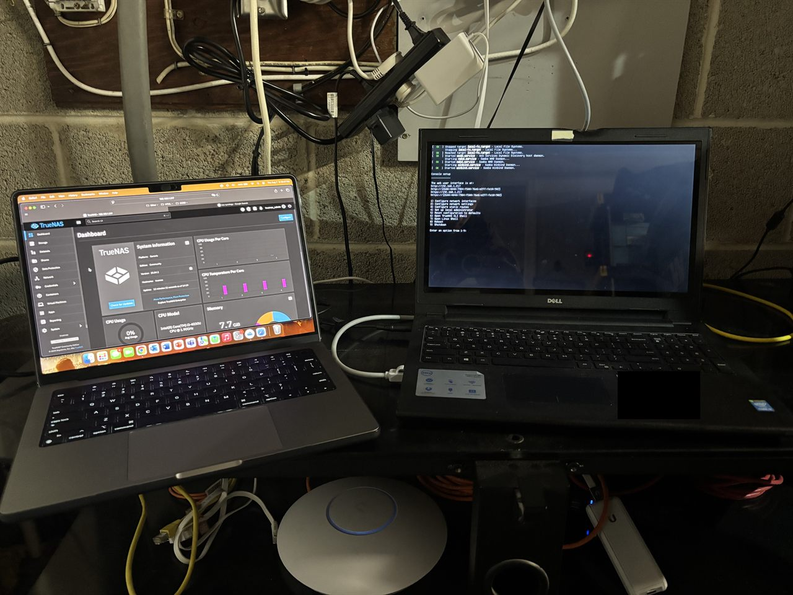
I taught myself how to image a new operating system onto a computer to repurpose it for my homelab. I discovered Network Attached Storage (NAS) and how it can be used to store and share files across a network. I took the 500GB hard drive from the Lenovo Mini PC and taught myself how to set it up through TrueNAS.
I successfully hooked TrueNAS up to the salvaged laptop and connected to the GUI from my network. Here I learned how to create storage disks, datasets, pools, shares, and most importantly, data protection. TrueNAS made sharing storage much easier — not only via SMB but also via NFS.
However, I ran into a problem: I couldn't close the laptop lid or the computer would shut down, or the screen text would burn into the display. So I taught myself how to pop open the hood and disconnect the screen power from the motherboard.
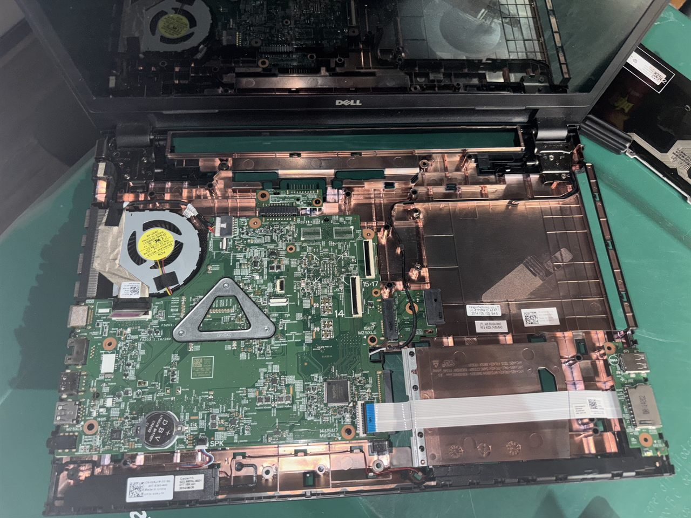
Popping open the hood helped me understand how the inside of a laptop is laid out. I learned the laptop had an M.2 drive for extra storage, and that laptop CPUs are usually soldered to the motherboard. Disconnecting the display saved the screen from burn-in and also conserved energy.
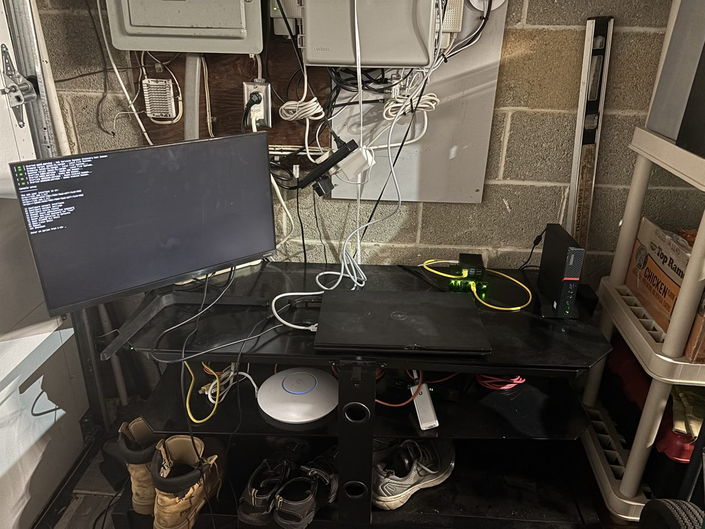
This allowed my first complete server to stay on with the screen off. Now I could access it from my personal laptop via SSH or the TrueNAS GUI.
8.6.25
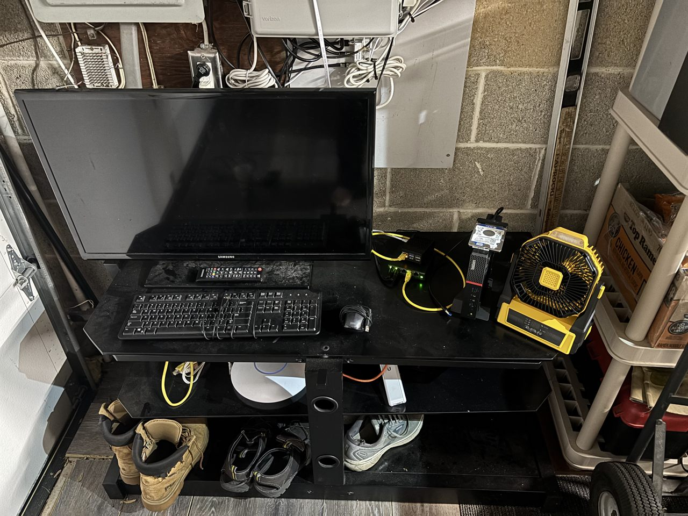
The start of my homelab journey...
I decided to start a homelab after I was gifted a Lenovo Mini PC. At first I just wanted to run a Minecraft server for my college friends, but this quickly introduced me to the world of self-hosting.
In the image: a wired keyboard and mouse, the Lenovo Mini PC, a small layer 2 network switch, a Raspberry Pi 5, and a 500GB hard drive salvaged from another laptop. I taught myself how to upgrade the Lenovo from Windows 10 to Windows 11 by bypassing the CPU requirements via command prompt. I also set up the hard drive as a shared network drive using SMB and got Raspberry Pi OS running on the Pi.
I quickly got hooked on self-hosting and started exploring different services and hardware options at various price points.
My homelab is a work in progress, but I'm excited to see where it goes!